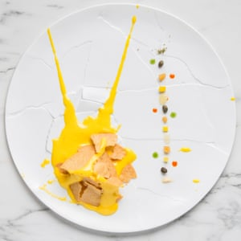
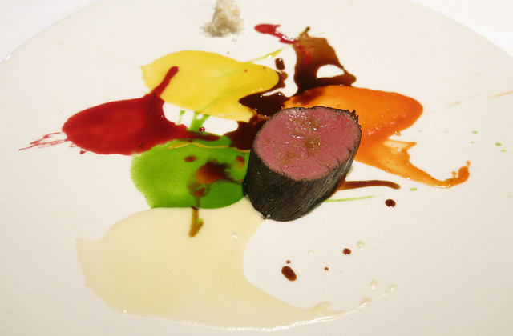

Osteria Francescana serves a contemporary Italian fare.
Osteria Francescana has three Michelin stars and is often hailed as the best restaurant in the world. Chef Massimo Bottura--and by extension, Osteria Francescana's philosophy--is clearly stated on the website: "Our kitchen is not a list of ingredients or demonstration of technical abilities. It is a narration of the Italian landscape and our passions. Cooking is a collision of ideas, techniques, and cultures. It is not mathematical. It is emotional." The dishes reflect Chef Bottura's visionary approach to Italian cuisine. In its early days, the restaurant nearly closed due to culinary conservatives' critique.
Visit their website!